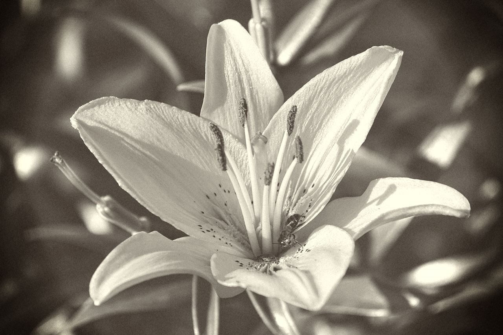
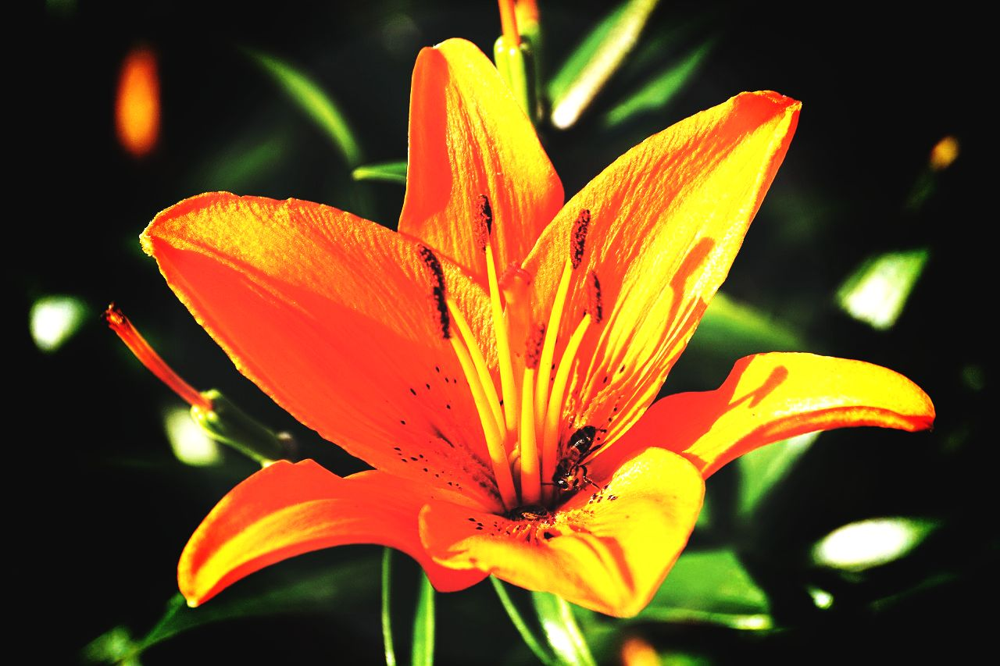
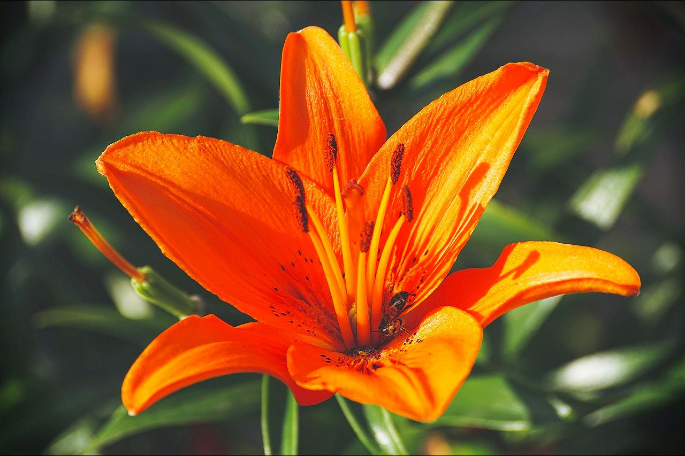
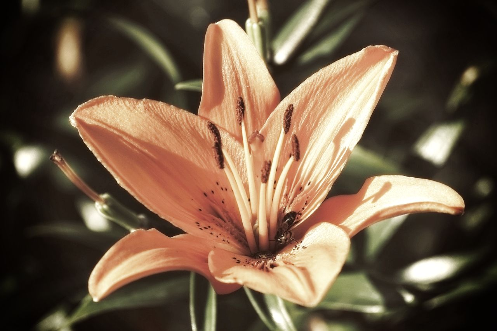

Vintage
Lomo
Clarity
Sin City

Cross Process

Pin Hole

Nostalgia
Her Majesty

This Online Image Editor lets you filter images ONLINE!
This Project Work is done by the Students of Siliguri Government Polytechnic, Department of Computer Science and Technology.
Our group members are: Rishikesh Haldar, Bibek Roy, Ritayan Ghosh, Subhajit Paul and Bhaswati Santra.